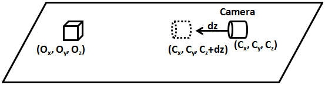
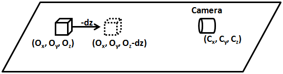
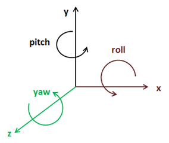
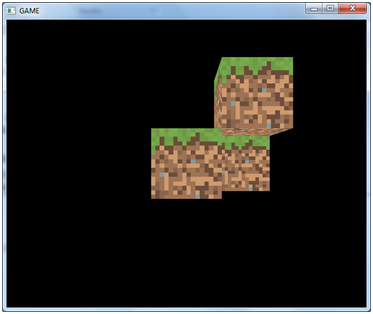

摄像机（Camera）
在本章中，我们将学习如何在三维场景中移动，就像一个可以在三维世界穿梭的摄像机，然而实际上这就是描述它的专用术语。
但是如果你尝试在OpenGL寻找中的摄像机功能，你会发现这根本不是摄像机，换句话说摄像机一直是固定在以屏幕(0, 0, 0)为中心点的位置。
因此，我们需要模拟出一个可以在三维空间中移动的摄像机。但是怎么做呢？摄像机是不能移动的，因此我们必须要移动世界中的全部的实体。换句话说，如果移动不了摄像机就移动整个世界。
因此，假设摄像机从(Cx, Cy, Cz)沿着Z轴移动到(Cx, Cy, Cz+dz)，从而靠近在(Ox, Oy, Oz)放置的物体。

我们要做的是如何向相反的方向精确地移动物体(在三维空间中的所有物体)。换句话说，其实物体就像在跑步机上跑步一样。

摄像机可以沿着三个轴(x, y和z)移动，也可以绕着它们旋转(翻滚(roll)、俯仰(pitch)和偏航(yaw))。

所以从基本上我们要做的就是让移动和旋转应用于所设置的三维世界全部物体。应该怎么做呢？答案是用另外一种变换，让它变换所有在摄像机运动方向上相反的顶点，再根据摄像机的旋转来旋转它们。当然，这将要用到另外一个矩阵，即所谓的观察矩阵(View Matrix)来完成。这个矩阵首先进行平移，然后沿着轴线进行旋转。
来看看如何构造这个矩阵。如果你记得变换章节（第6章）的变换矩阵:
在使用观察矩阵之前，应将它与投影矩阵相乘，之后矩阵应该是这样的：
现在已经有三个矩阵了，我们应该思考一下这些矩阵的生命周期。在游戏运行的时候，投影矩阵不应该更改太多，最坏的情况，每次渲染可能改变一次。如果摄像机移动，则观察矩阵可以在每次渲染改变一次。世界矩阵每渲染一个GameItem改变一次，所以每次渲染调用都会改变许多次。
因此，如何把每一个矩阵传递到顶点着色器呢？你可能会看到一些代码，为三个矩阵分别定义一个Uniform，但理论上，最有效的方法是组合投影和观察矩阵，将其称为PV矩阵，并传递world和PV矩阵到着色器。这样，将可以与世界坐标一起运算，并且可以避免一些额外的运算。
实际上，最方便的方法是将观察矩阵与世界矩阵相组合。为什么会这样？因为要记住整个摄像机的概念就是戏法，要做的是移动整个世界来模拟摄像机的位移和只显示一小部分的三维世界。因此，如果直接与世界坐标一起处理，可能会让远离中心点的世界坐标遇到一些精度问题。如果在所谓的摄像机空间中工作利用点的性质，虽然远离世界的中心点，但也靠近摄像机。可以将观察和世界矩阵相结合的矩阵称为模型观察矩阵(Model View Matrix)。
来开始修改代码实现摄像机吧。首先，先创建一个名为Camera的类，它将储存摄像机的位置与旋转的方向。该类将提供设置位置或旋转方向的方法，或在当前状态下用偏移量更新这些值。
package org.lwjglb.engine.graph;
import org.joml.Vector3f;
public class Camera {
private final Vector3f position;
private final Vector3f rotation;
public Camera() {
position = new Vector3f(0, 0, 0);
rotation = new Vector3f(0, 0, 0);
}
public Camera(Vector3f position, Vector3f rotation) {
this.position = position;
this.rotation = rotation;
}
public Vector3f getPosition() {
return position;
}
public void setPosition(float x, float y, float z) {
position.x = x;
position.y = y;
position.z = z;
}
public void movePosition(float offsetX, float offsetY, float offsetZ) {
if ( offsetZ != 0 ) {
position.x += (float)Math.sin(Math.toRadians(rotation.y)) * -1.0f * offsetZ;
position.z += (float)Math.cos(Math.toRadians(rotation.y)) * offsetZ;
}
if ( offsetX != 0) {
position.x += (float)Math.sin(Math.toRadians(rotation.y - 90)) * -1.0f * offsetX;
position.z += (float)Math.cos(Math.toRadians(rotation.y - 90)) * offsetX;
}
position.y += offsetY;
}
public Vector3f getRotation() {
return rotation;
}
public void setRotation(float x, float y, float z) {
rotation.x = x;
rotation.y = y;
rotation.z = z;
}
public void moveRotation(float offsetX, float offsetY, float offsetZ) {
rotation.x += offsetX;
rotation.y += offsetY;
rotation.z += offsetZ;
}
}
接下来在Transformation中，将添加一个新矩阵来储存观察矩阵。
private final Matrix4f viewMatrix;
我们要提供一个更新这个值的方法。与投影矩阵一样，这个矩阵对于渲染周期中所面对的对象都是相同的。
public Matrix4f getViewMatrix(Camera camera) {
Vector3f cameraPos = camera.getPosition();
Vector3f rotation = camera.getRotation();
viewMatrix.identity();
// First do the rotation so camera rotates over its position
viewMatrix.rotate((float)Math.toRadians(rotation.x), new Vector3f(1, 0, 0))
.rotate((float)Math.toRadians(rotation.y), new Vector3f(0, 1, 0));
// Then do the translation
viewMatrix.translate(-cameraPos.x, -cameraPos.y, -cameraPos.z);
return viewMatrix;
}
正如你所见的，我们首先需要做旋转，然后变换。如果操作顺序相反，我们不会沿着摄像机位置旋转，而是沿着坐标原点旋转。请注意，在Camera类的movePosition方法中，我们不只是简单地增加摄像机位置的偏移量。我们还考虑了沿Y轴的旋转，偏航，以便计算最终位置。如果我们只是通过偏移来增加摄像机的位置，摄像机就不会朝着它的方向移动。
除了上面提到的，我们现在还没有得到一个可以完全自由移动的摄像机。这将在之后的章节中完成，因为这有点复杂。
最后，我们将移除之前的getWorldMatrix方法，并添加一个名为getModelViewMatrix的新方法。
public Matrix4f getModelViewMatrix(GameItem gameItem, Matrix4f viewMatrix) {
Vector3f rotation = gameItem.getRotation();
modelViewMatrix.identity().translate(gameItem.getPosition()).
rotateX((float)Math.toRadians(-rotation.x)).
rotateY((float)Math.toRadians(-rotation.y)).
rotateZ((float)Math.toRadians(-rotation.z)).
scale(gameItem.getScale());
Matrix4f viewCurr = new Matrix4f(viewMatrix);
return viewCurr.mul(modelViewMatrix);
}
getModelViewMatrix方法将在每个GameItem实例中调用，因此我们必须对观察矩阵的副本进行处理，因此在每次调用中都不会积累转换。
Renderer类的render方法中，在投影矩阵更新之后只需要根据摄像机的值更新观察矩阵。
// Update projection Matrix
Matrix4f projectionMatrix = transformation.getProjectionMatrix(FOV, window.getWidth(), window.getHeight(), Z_NEAR, Z_FAR);
shaderProgram.setUniform("projectionMatrix", projectionMatrix);
// Update view Matrix
Matrix4f viewMatrix = transformation.getViewMatrix(camera);
shaderProgram.setUniform("texture_sampler", 0);
// Render each gameItem
for(GameItem gameItem : gameItems) {
// Set model view matrix for this item
Matrix4f modelViewMatrix = transformation.getModelViewMatrix(gameItem, viewMatrix);
shaderProgram.setUniform("modelViewMatrix", modelViewMatrix);
// Render the mes for this game item
gameItem.getMesh().render();
}
这就是我们实现摄像机的基本代码，现在我们需要用它。我们Key更改输入处理和更新摄像机的方式。我们将设置以下按键：
- “A”和“D”键使摄像机左右移动。
- “W”和“S”键使摄像机前后移动。
- “Z”和“X”键使摄像机上下移动。
当鼠标按下右键时，我们可以使用鼠标位置沿X和Y轴旋转摄像机。
正如你所看到的，我们将首次使用鼠标。创建一个名为MouseInput的新类，该类将封装鼠标处理的代码。
package org.lwjglb.engine;
import org.joml.Vector2d;
import org.joml.Vector2f;
import static org.lwjgl.glfw.GLFW.*;
public class MouseInput {
private final Vector2d previousPos;
private final Vector2d currentPos;
private final Vector2f displVec;
private boolean inWindow = false;
private boolean leftButtonPressed = false;
private boolean rightButtonPressed = false;
public MouseInput() {
previousPos = new Vector2d(-1, -1);
currentPos = new Vector2d(0, 0);
displVec = new Vector2f();
}
public void init(Window window) {
glfwSetCursorPosCallback(window.getWindowHandle(), (windowHandle, xpos, ypos) -> {
currentPos.x = xpos;
currentPos.y = ypos;
});
glfwSetCursorEnterCallback(window.getWindowHandle(), (windowHandle, entered) -> {
inWindow = entered;
});
glfwSetMouseButtonCallback(window.getWindowHandle(), (windowHandle, button, action, mode) -> {
leftButtonPressed = button == GLFW_MOUSE_BUTTON_1 && action == GLFW_PRESS;
rightButtonPressed = button == GLFW_MOUSE_BUTTON_2 && action == GLFW_PRESS;
});
}
public Vector2f getDisplVec() {
return displVec;
}
public void input(Window window) {
displVec.x = 0;
displVec.y = 0;
if (previousPos.x > 0 && previousPos.y > 0 && inWindow) {
double deltax = currentPos.x - previousPos.x;
double deltay = currentPos.y - previousPos.y;
boolean rotateX = deltax != 0;
boolean rotateY = deltay != 0;
if (rotateX) {
displVec.y = (float) deltax;
}
if (rotateY) {
displVec.x = (float) deltay;
}
}
previousPos.x = currentPos.x;
previousPos.y = currentPos.y;
}
public boolean isLeftButtonPressed() {
return leftButtonPressed;
}
public boolean isRightButtonPressed() {
return rightButtonPressed;
}
}
MouseInput类提供了一个在初始化过程中应该调用的init方法，并注册一组回调来处理鼠标事件：
glfwSetCursorPosCallback：注册一个回调，该回调将在鼠标移动时被调用。glfwSetCursorEnterCallback：注册一个回调，该回调将在鼠标进入窗口时被调用。即使鼠标不在窗口内，我们也会收到鼠标事件。当鼠标在窗口内时，使用这个回调来确认鼠标进入窗口。glfwSetMouseButtonCallback：注册一个回调，该回调在按下鼠标按钮时被调用。
MouseInput类提供了一个input方法，在处理游戏输入时应调用该方法。该方法计算鼠标从先前位置的位移，并将其存储到Vector2f类型的displVec变量中，以便它被游戏使用。
MouseInput类将在GameEngine类中被实例化，并且将作为游戏实现的init和update方法中的参数传递（因此需要相应地更改接口）。
void input(Window window, MouseInput mouseInput);
void update(float interval, MouseInput mouseInput);
鼠标输入将在GameEngine类的input方法中被处理，而最终的控制将交由游戏实现。
protected void input() {
mouseInput.input(window);
gameLogic.input(window, mouseInput);
}
现在已经准备好更改DummyGame类来处理键盘和鼠标输入了。该类的输入方法将如下所示：
@Override
public void input(Window window, MouseInput mouseInput) {
cameraInc.set(0, 0, 0);
if (window.isKeyPressed(GLFW_KEY_W)) {
cameraInc.z = -1;
} else if (window.isKeyPressed(GLFW_KEY_S)) {
cameraInc.z = 1;
}
if (window.isKeyPressed(GLFW_KEY_A)) {
cameraInc.x = -1;
} else if (window.isKeyPressed(GLFW_KEY_D)) {
cameraInc.x = 1;
}
if (window.isKeyPressed(GLFW_KEY_Z)) {
cameraInc.y = -1;
} else if (window.isKeyPressed(GLFW_KEY_X)) {
cameraInc.y = 1;
}
}
这将更新一个名为cameraInc的Vector3f变量，它储存了摄像机应有的位移。
DummyGame类的update方法将根据处理键盘和鼠标事件，来修改摄像机的位置和旋转。
@Override
public void update(float interval, MouseInput mouseInput) {
// Update camera position
camera.movePosition(cameraInc.x * CAMERA_POS_STEP,
cameraInc.y * CAMERA_POS_STEP,
cameraInc.z * CAMERA_POS_STEP);
// Update camera based on mouse
if (mouseInput.isRightButtonPressed()) {
Vector2f rotVec = mouseInput.getDisplVec();
camera.moveRotation(rotVec.x * MOUSE_SENSITIVITY, rotVec.y * MOUSE_SENSITIVITY, 0);
}
}
现在可以向世界添加更多的立方体，将它们放在特定位置并使用新摄像机进行观察。正如你所见的，所有的立方体共享相同的Mesh实例。
GameItem gameItem1 = new GameItem(mesh);
gameItem1.setScale(0.5f);
gameItem1.setPosition(0, 0, -2);
GameItem gameItem2 = new GameItem(mesh);
gameItem2.setScale(0.5f);
gameItem2.setPosition(0.5f, 0.5f, -2);
GameItem gameItem3 = new GameItem(mesh);
gameItem3.setScale(0.5f);
gameItem3.setPosition(0, 0, -2.5f);
GameItem gameItem4 = new GameItem(mesh);
gameItem4.setScale(0.5f);
gameItem4.setPosition(0.5f, 0, -2.5f);
gameItems = new GameItem[]{gameItem1, gameItem2, gameItem3, gameItem4};
你会得到如下所示的东西：
